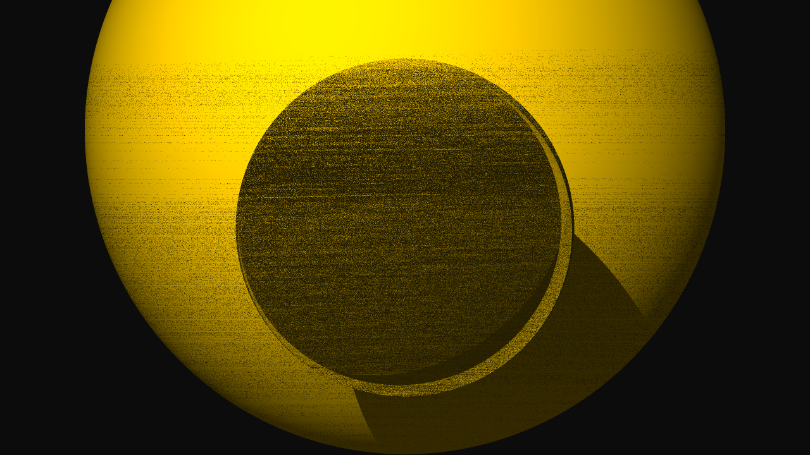

01 / Computer graphics
Recursive
ray tracer
I extended the course framework to render spheres and triangles with direct lighting, recursive reflections and refractions, and shadow rays. Four subpixel samples help smooth edges, while OpenMP distributes the pixel loop across CPU threads.

Saved output from my final submission. The renderer is educational; it is not a physically based path tracer.
What I implemented
- Ray–sphere and ray–triangle intersections, material evaluation and Phong illumination.
- Recursive secondary rays, total internal reflection handling and transparent-material attenuation.
- Supersampling, headless output and a camera path for saved animation frames.